记一次虚拟币的渗透之旅
以下文章来源于酒仙桥六号部队 ，作者先锋情报站
知其黑，守其白。 分享知识盛宴，闲聊大院趣事，备好酒肉等你！
圈套诱因
近些年虚拟币越发的火爆，以及各种虚拟币相关的平台也层出不穷的出现，当然圈套也层次不穷出现在我们身边，近日穷得不行的我，也接到了来自声称能够带我一夜暴富的电话，为了一探究竟，我就开始了卧薪尝胆之旅。
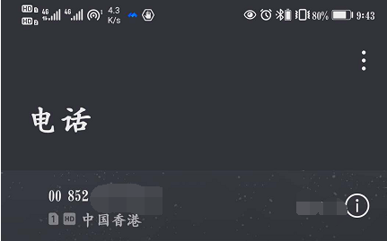
通过电话的指引，一名声称为客服的人，加上了我的微信，并拉我进入了一个微信群，可以看到这个群的人也不少，至于有多少人进入这场局不得而知。
进入群内有各色声称币圈大佬和老玩家的身影，在群内活跃，至于这些人的身份真假，我也不敢说，我也不敢问。但是没过几天群内群主号称某平台的客服开始出现，并推出一种虚拟币的玩法，福利十分诱人，也是这引起了我的兴趣。
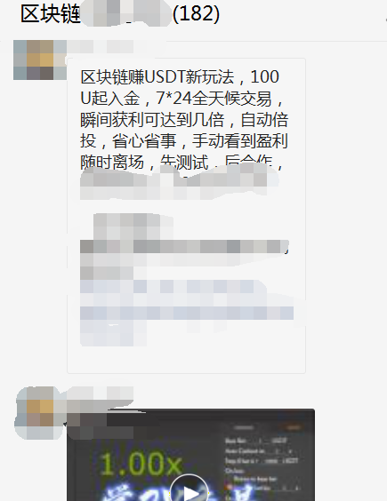
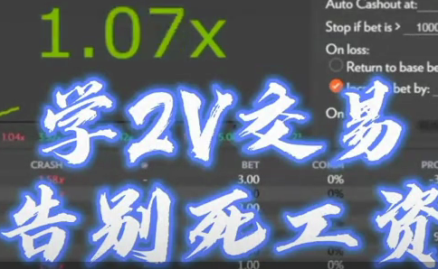
这鲜明的标题，诱人的回报，让我这打工人是心动不已，也正是这夸张的宣传，也暴露了它这平台的不可靠的感觉。所以，为了揭开这场局完整的套路，就开始了一场艺术之旅。
踩点圈套
起手就是一顿框架、端口、目录、子域名扫描操作猛如虎。
端口发现三个，基本可以确定是台linux的机器。
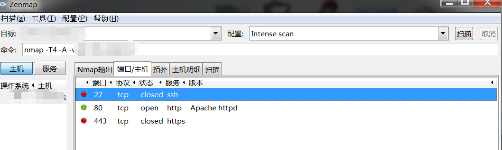
比较遗憾没有发现框架，可能是二开或者自写的平台、
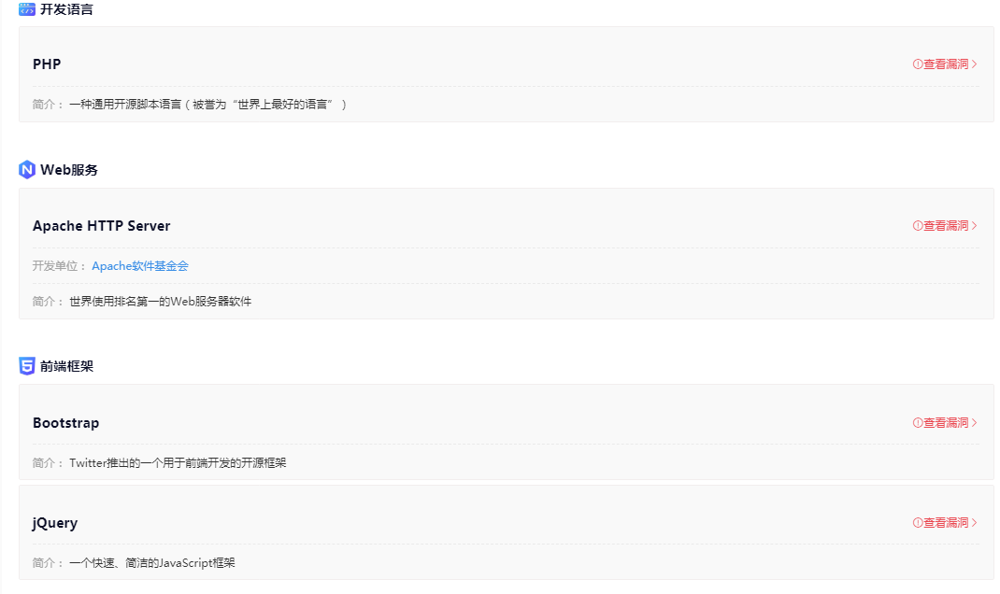
子域名也一无所获···
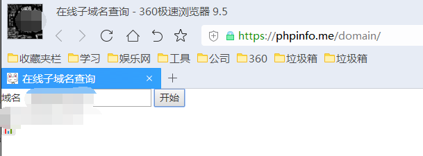
目录扫描既然都没中，有可能是waf拦截或者路径是开发作者定制过的，比较遗憾，直接getshell估计是没啥希望了，就先攒着吧，细节有时决定成败。
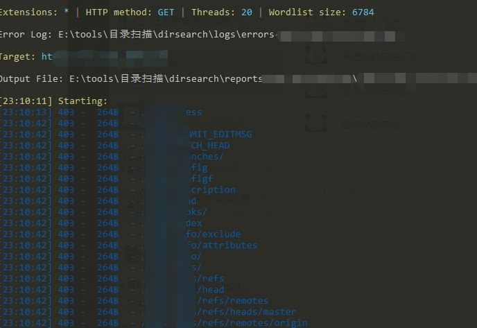
艺术控权
踩点完毕，开始游走此带人暴富的平台。
由于没有注册账号功能，所以只好碰碰运气，看看有没有遗留下来的测试账号未删除。
随手一试13888888888，提示账号不存在。。。
因为以前刷SRC有过蒙对手机号的经历，所以这里也试了一下，直接Burp设置两个参数跑一下，还真就跑到一个测试账号：13100000000/123456
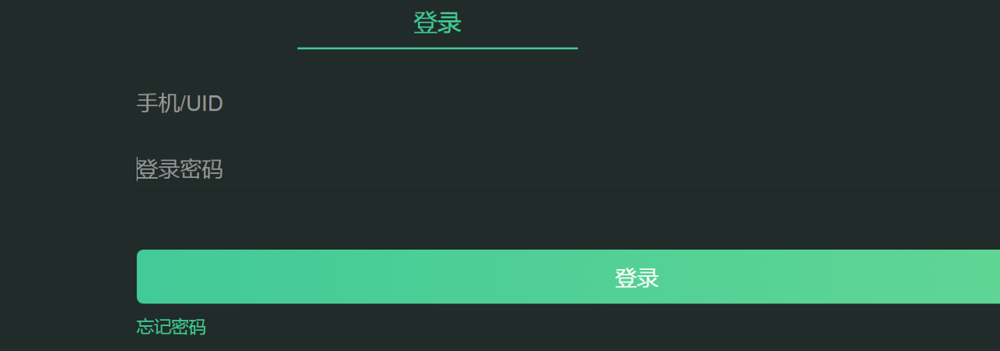
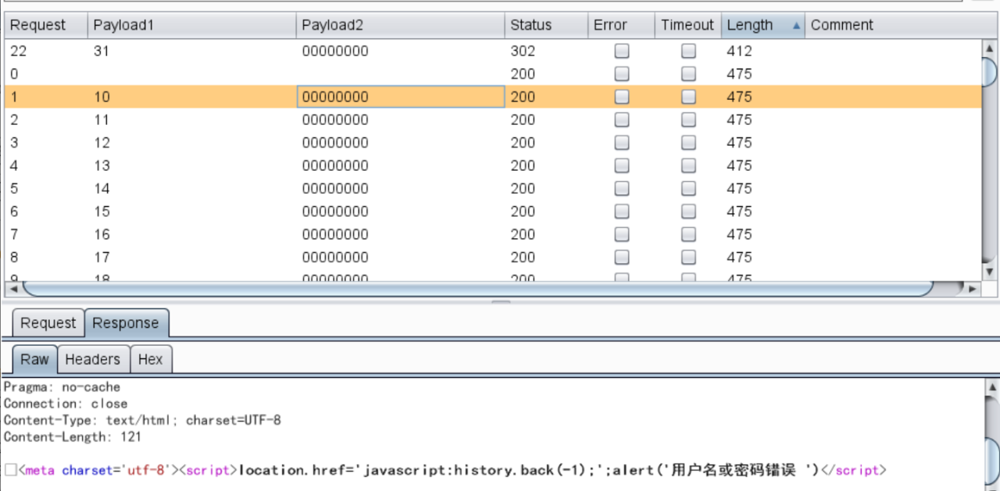
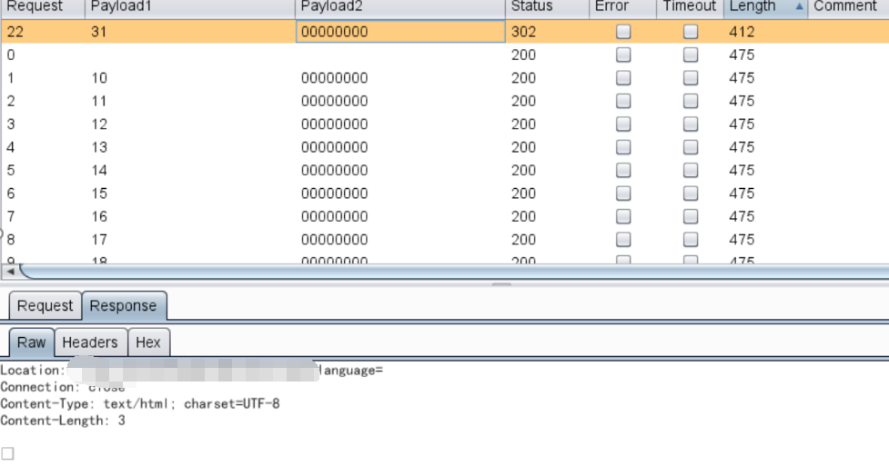
登陆后发现给的好像是代理权限，没有发现可以上传的功能，继续寻找漏洞点。
隐藏的比较深，在交易中心，买入卖出记录那里，点击记录详情时抓包，会在POST包里抓到id参数，这个参数存在sql注入。
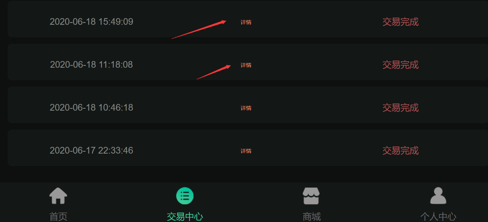
判断为时间盲注，平常只有60左右。
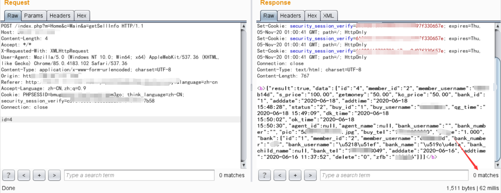
加个sleep()试试，可以看到直接飙升到了5000多。
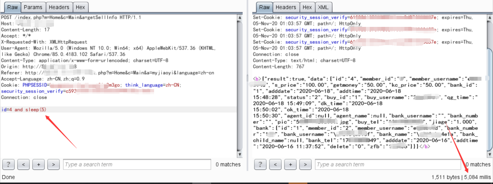
本想sqlmap一把梭，然鹅。。。
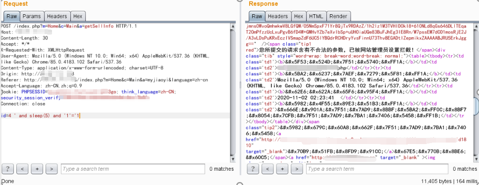
也就是下面这个页面。
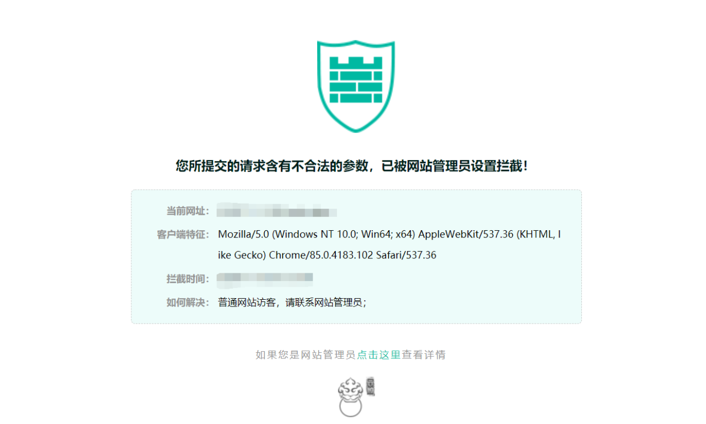
找到先知社区发的文章试了试结果还真可以，运气真不错。https://xz.aliyun.com/t/7522
部分payload形式参考：
and if(ascii(substr((/\*!50000%53elect\*/column_name frominformation_schema.columns where table_schema=database/\*\*/() andtable_name='xxxx' limit 0,1),1,1))\>96,1,sleep/\*\*/(5))
最终一点点注入拿到数据库名，表名，字段名，管理员用户，密码md5。
找了半天后台也没找到，后来发现竟然能从前台登录进去，普通用户或者代理只有个人中心权限，只有具有超级管理员权限的用户才有一个管理中心的权限，点击既可跳转至后台。
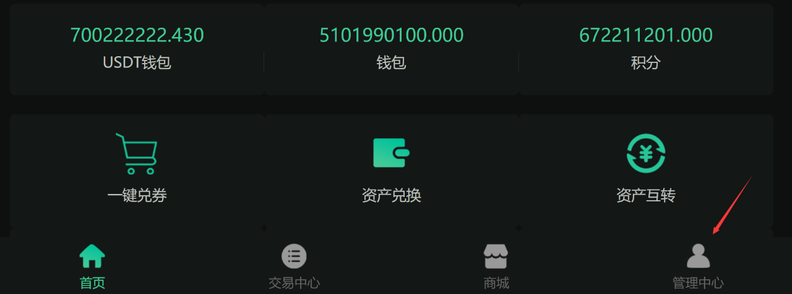
在后台发现功能还挺多，但是有用的没多少。。。全是money，找到一个上传图片的位置。
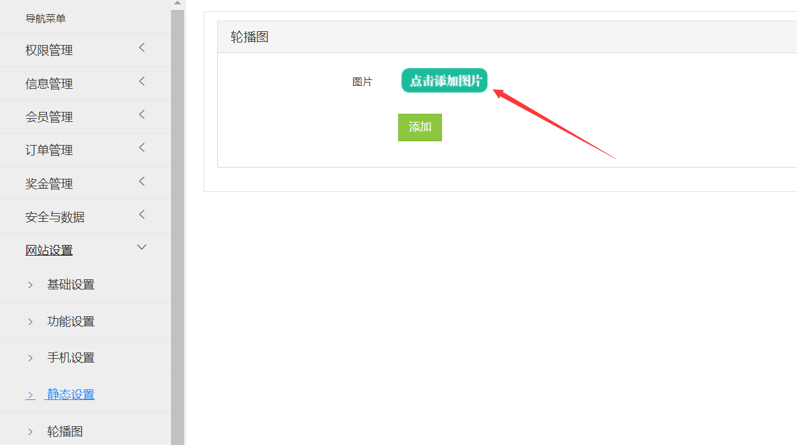
上传就比较好绕过了，一是网站后端写的垃圾，二是好像没有waf啥事，应该是没有设置文件上传的相关的防护。
前端js绕过，直接抓包改后缀即可，上传成功后返回了路径。
权限提升
拿到webshell之后，尝试继续深入，但是发现只有列网站目录的权限，而且无法执行命令。
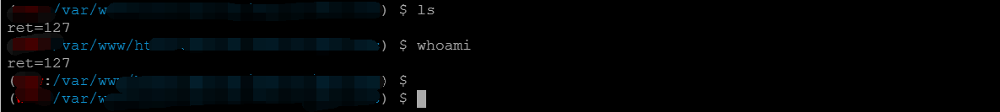
看了下phpinfo发现过滤了很多函数。

看来没那么容易，需要bypass disable_function，这里打算试试蚁剑的bypass插件。
https://github.com/Medicean/as_bypass_php_disable_functions
GC模式直接bypass成功。
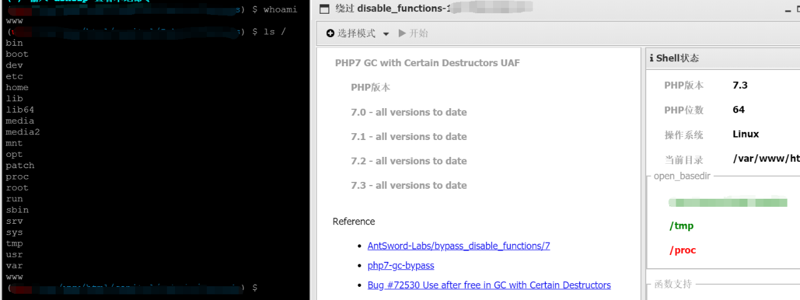
追溯黑手
既然服务器已经拿了，那接下来进一步获取这个机器的信息，由于我们权限不足，先看一下/var/log/lastlog和/var/log/wtmp这两个文件（都是有记录登录ip的）。
然而，全是空的，此时心态有点崩。
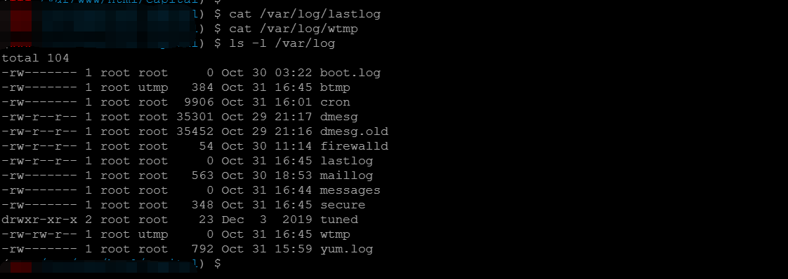
看来这个平台的人还是比较谨慎，隐藏的很深，怀疑是后台跑着什么脚本自动把日志全清了。
尝试一下SUID提权。
常见的可用于SUID提权的命令：Nmap、Vim、Find、Bash、More、Less、Nano、Cp。
这里推荐一个网站：https://gtfobins.github.io/
bypassdisable_function后的shell不知道为啥find搜不到具有SUID权限的文件，所以手动试了试碰碰运气。
尝试了几个都失败了，后来发现find本身就存在SUID，神奇。
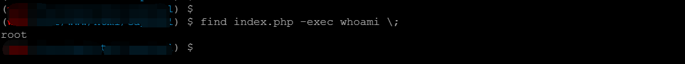
提权后虽然权限高了，但是我的目的是想溯源到这个机器所有者的真实信息，以root身份又逛了一圈，结果也没有什么发现，事实证明在root目录下确实有个某脚本文件在运行，先把进程杀掉等待有人上线，但是我又不知道等到猴年马月，只好又把目光放在了后台的几处信息上。
钓鱼黑手
由于从机器溯源上排查无果，所以开始转手钓鱼的手段。
最终在前台公告和后台设置里面，发现疑似开发和运营人员三个邮箱，作为钓鱼对象。

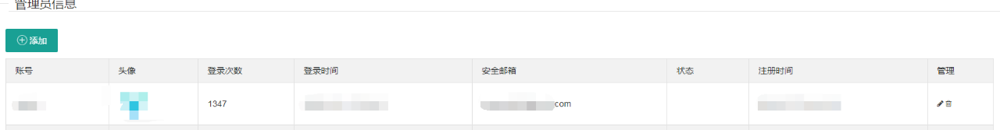
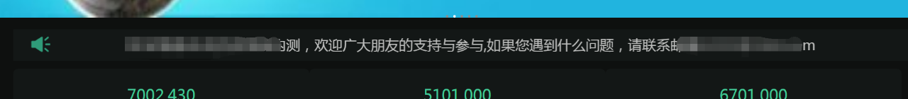
狙击黑手的准备（一）
接下来制作Word宏进行钓鱼，因为有了CobaltStrike的出现，制作宏病毒的方式大大降低了，但随之的问题也出现了，因为该工具对于宏病毒的生成是写死的，无法定制自己想要构造的恶意执行代码，导致恶意代码的特征值很容易被抓取，会被发件服务器，收件邮件网关，本地杀毒等一系列防护设备或措施拦截。所以为了邮件能进收件箱，我考虑学习使用了免杀手段。
首先要搞清楚我们的钓鱼邮件在哪一个步骤挂掉了。因为一般常见的邮件流程如下：
邮件→邮件服务器→防毒→防垃圾→收件箱
首先科普一下当下杀软的三种查杀方式：1.静态查杀 2.云查杀3.行为查杀。邮件服务器为了可用性和隐私性一般只有静态查杀。所以我们只需要规避特征值绕过静态查杀就可以让钓鱼附件进入收件箱了。
那么如何规避静态查杀？最好的办法当然是自己写恶意代码，但我是个菜鸡，借用了大佬写好的免杀开源脚本：“EvilClippy”
下载地址：
https://github.com/outflanknl/EvilClippy/releases
首先利用CobaltStrike生成Office宏病毒，单击“CobaltStrike”->“监听器”，在下方选择“Add”，随便输入名字，如“Office”,HTTPHosts为CobaltStrike服务端的IP，这里我架设到公网上了，随意设置监听端口，如“8888”。
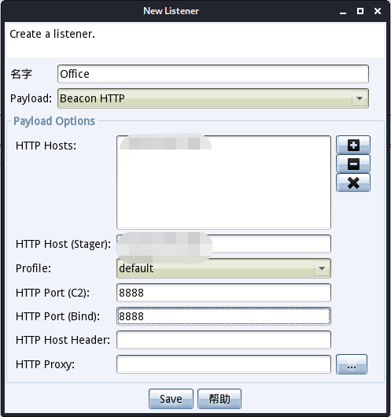
选择“攻击”->“生成后门”->“MS OfficeMacro”开始生成Office宏代码，监听器选择刚刚我们开启的。
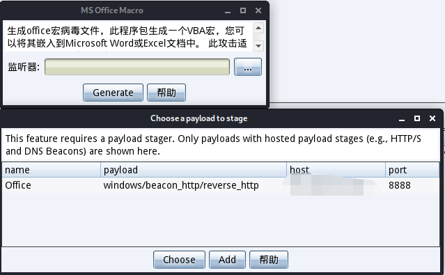
选择监听器后，单击“Generate”。
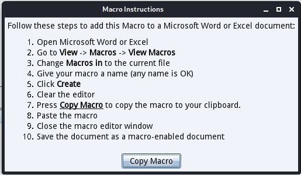
单击“CopyMacro”将这段利用CobaltStrike生成的恶意代码复制下来，接下来打开Word，我这里根据实际情况认真写了点东西，毕竟一切为了钓鱼成功嘛。先保存为启用宏的文档。
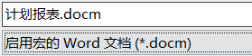
然后单击“视图”->“宏”,然后宏名任意设置，宏的位置为当前文档，再单击“创建”先将原有的代码清掉，这里注意一定要删掉再粘贴之前CobaltStrike生成的代码，我也不太清楚为什么，不清掉直接覆盖有时候就不好使（玄学疑惑）。
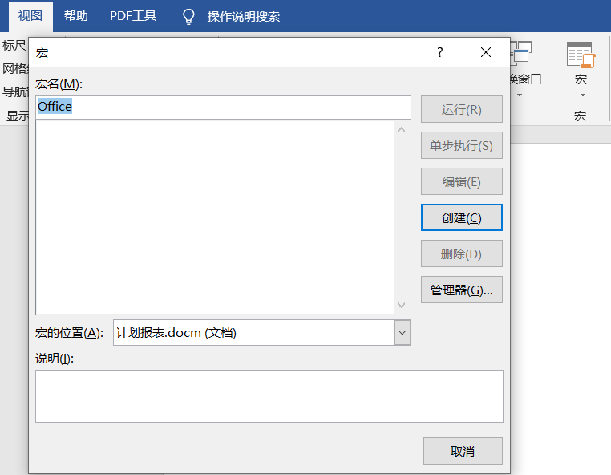
保存完后，利用virscan进行一波检测，地址：https://www.virscan.org/
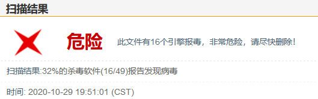
这显然不行，这下就用到了我们之前提到的工具EvilClippy1-1.3，该工具使用很简单，首先准备一个正常的VBA代码，test.vba代码如下
Sub test()
'
' 该vb代码没有任何功能，用于迷惑杀软。
'
End Sub
没有错代码就是这么骚气，然后执行命令EvilClippy.exe -s test.vba计划报表.docm，出现下图所示即为成功，同时生成一个新得docm文件
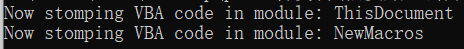
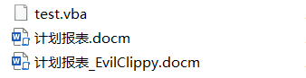
再次将该文件放到virscan进行查杀，这回就有一个检测出来了，静态免杀基本就完成了。
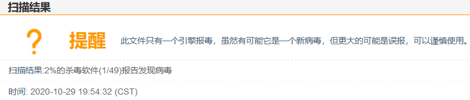
然后测试通过。
测试成功上线CS，露出了欣慰的笑容。
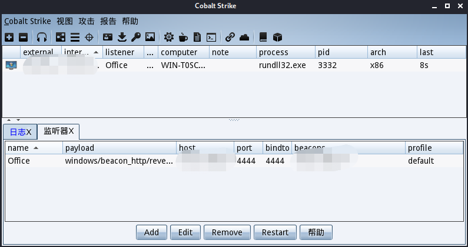
狙击黑手的准备（二）
接下来做一个就开始邮件钓鱼吧，这里使用Swaks绕过SPF验证进行邮件伪造，Swaks是一个功能强大，灵活，可编写脚本，面向事务的SMTP测试工具，由JohnJetmore编写和维护。
测试连通性：
swaks --to xxxx@qq.com
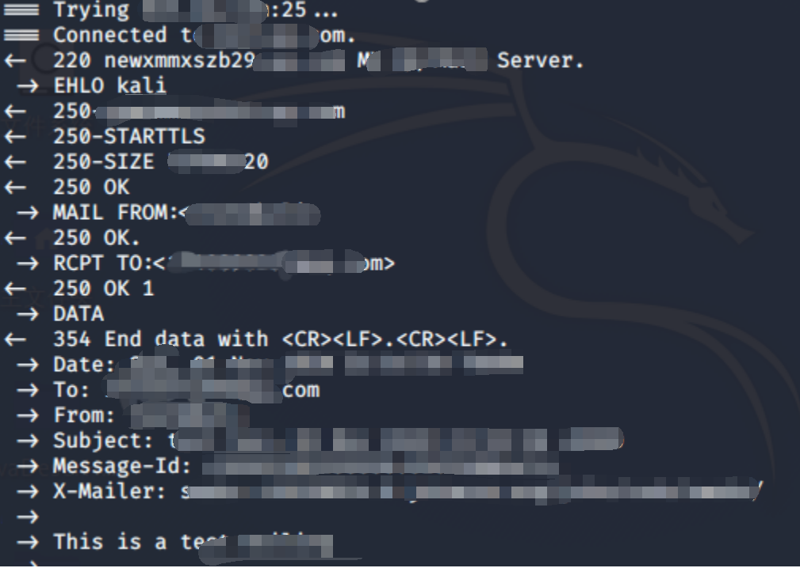
我们可以利用Swaks伪造并绕过SPF发送，命令参考如下：swaks --to xxx\@qq.com --from110\@police.com --body hacking --header "Subject: hello" --attach xxxxx.docm--server mail.smtp2go.com -p 25 –au <USER> -ap <PASSS>
测试效果一下：
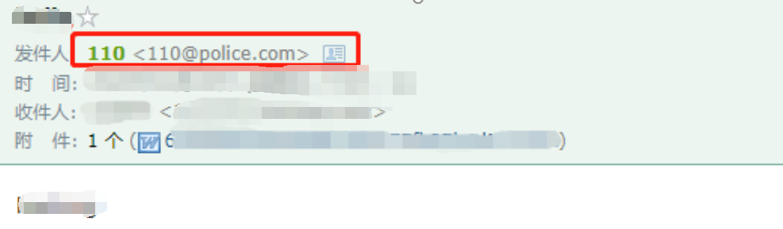
接下来就是给搜集到的几个邮箱发送免杀钓鱼文件，看看有没有机会捕捉到那一丝上线的可能，这将是一场持久战，同时我也尝试的向他们微信客服进行钓鱼社工，但是由于这种平台大多是群控机器人，所以一直未有人回应，接下来我只好耐心的等待邮箱和他们主机上线的记录。
暴富梦破灭的总结
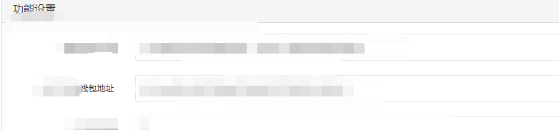
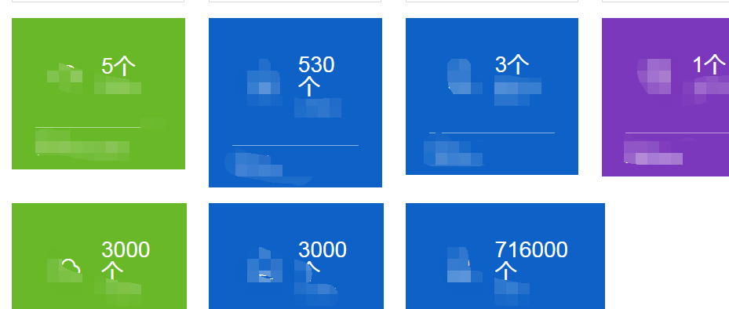
此文就写到这里，由于钓鱼社工是一个比较长久的环节，也是斗智斗勇的过程，所以最终的黑手还需慢慢的去引诱，卧薪尝胆，暴富梦虽然就此破灭。但是也可以看出天下没有掉馅饼的好事，还有可能人家惦记着你的馒头，希望大家提高警惕避免踏入圈套之中，从后台上来看，还是有不少受害者，同时资金都被快速的转移。

点赞 在看 转发